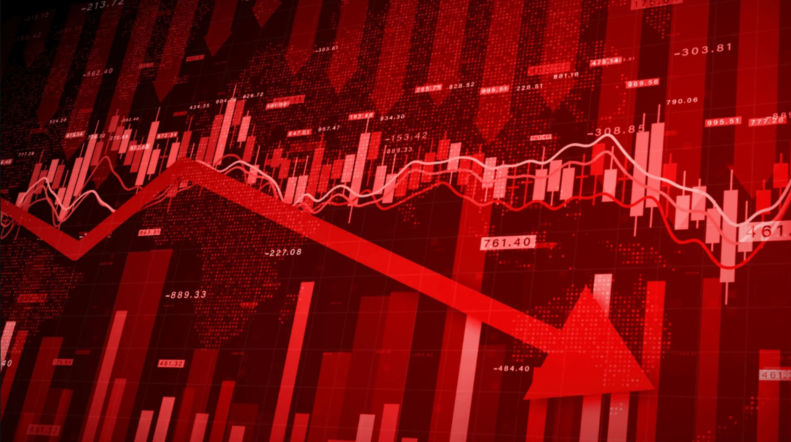

From Fear to Opportunity: Understanding the Market Sell-Off and Why There is No Need to Panic
The tech-heavy Nasdaq-100 Index has fallen nearly 9% since Halloween, spooking many traders. In this article I will discuss the catalysts for this sell-off and the case for a bounce.

The tech-heavy Nasdaq-100 Index has fallen nearly 9% since Halloween, spooking many traders. In this article I will discuss the catalysts for this sell-off and the case for a bounce.

Why did the sell-off occur?
There are 3 main reasons for the sharp decline.
- Rate-cut expectations
- Investors had been banking on rate cuts, and a 25-basis-point reduction was largely priced into the market when equities hit all-time highs in late October. We can use Polymarket to see broad investor attitudes and the December Fed decision chart makes this clear. On October 27th, almost exactly when the Nasdaq reached its peak, about 90% of Polymarket participants were betting on a 25-bp cut. As of November 20th, that probability has fallen sharply to about 35%. However, in the morning of November 21st, New York Fed President John Williams announced that he sees a rate cut as a high possibility. Williams said "I still see room for a further adjustment in the near term to the target range for the federal funds rate to move the stance of policy closer to the range of neutral." This was reflected in both the Polymarket graph, now reading 67% in favor of a 25 bps rate cut, and also the Nasdaq, which has rallied over 1.5% from its overnight lows.
- Fears of AI growth and high valuations
- The massive rally since April has left much of the mag-7 and other big tech stocks at incredibly high valuations. Nvidia, for example, has become the largest company (by valuation) in the world on the back of the AI trade, reaching a valuation of nearly $5 trillion. Investors are fearing an AI bubble and have begun to take their money out of the market or reallocate into risk-off assets. This is made clear by CNN's Fear and Greed Index, which now sits at a 6, reading "extreme fear."
- Natural pull-back
- Gains like this are generational... this type of thing does not normally happen. It is only natural, and healthy, for the market to pull back coming off of a 60%+ increase in the Nasdaq-100 since April.
How much further can this go?

When looking at a higher timeframe chart of the Nasdaq, I believe there is more room to the downside.
Price inversed a weekly fair value gap (FVG) which signals a shift to bearish order flow. This is denoted by the grey box in the upper right corner of the picture.
Further, price has broken below the 50-day SMA, which is denoted by the red line on the chart. On multiple occasions, the Nasdaq had bounced off this line, typically used as a "support" zone. The strength of the break below this zone signals to me that a further drop may be on the horizon.
I believe the next downside targets are likely the nearest daily swing lows (bottom two blue lines) and a weekly FVG represented by the grey box at the bottom of the screen.
If price wants to continue lower, this is where it will draw to... from here I'm confident a sustained bounce could occur.
However, it is impossible to predict the exact bottom without first seeing confirmation. Because of this, I won't be waiting until these levels to buy more. I’ve already been buying into the dip, as I did back in April, and dollar-cost averaging across all my holdings
What are the catalysts for a bounce?
First, sentiment has become increasingly bearish. As I mentioned earlier, CNN's Fear and Greed Index has reached extreme fear levels nearly as low as the April tariff scare. The 5 day put/call ratio has spiked from .58 in early October to over .80. As I spoke about in my "buying the dip" article, when everyone crowds to one side of the boat, markets often move the other way.
Furthermore, Nvidia, widely regarded as the leader in the AI sector, easily beat both earnings and revenue expectations in its Q3 report released yesterday.
Jensen Huang, the CEO of Nvidia, emphasized that the “AI ecosystem is scaling fast,” and that demand for AI training and inference is accelerating.
Nvidia’s strong earnings beat, coupled with encouraging job data, indicates that both the AI trade and the broader market remain fundamentally solid. I see the historic intraday selloff of around 5% on the Nasdaq (on Nov 20th) as fear and skepticism returning rather than a notable underlying issue.
In the headlights now is the Fed's decision on rate cuts in December. As I mentioned earlier in the article, New York Fed President John Williams announced this morning that he foresees "further adjustment" to rates in December. The market responded bullishly to this news which indicates how a real rate cut could be a big catalyst for a rally.
Takeaways
The past few weeks have shaken investors’ confidence, but context matters. Yes, the Nasdaq-100 has pulled back sharply. Yes, sentiment has flipped from greed to fear. But none of the core pillars supporting this year’s rally (earnings strength, AI investment, and a gradually easing macro backdrop) have broken.
Extreme sentiment readings, elevated put/call ratios, strong earnings from Nvidia, and increasingly dovish signals from the Federal Reserve all point toward a market that is simply resetting rather than unraveling. Corrections like this are very normal after massive moves to the upside, and history shows that they often set the stage for the next leg higher.
Technical structure suggests the market may want to sweep the next set of daily lows or fill the remaining weekly imbalance before establishing a durable bottom but waiting for the “perfect” level is unwise. Markets rarely give clean retests, and reversals are frequently unpredictable.
Due to these reasons, I will continue dollar-cost-averaging, rather than panicking, as I expect the next meaningful move to be higher.